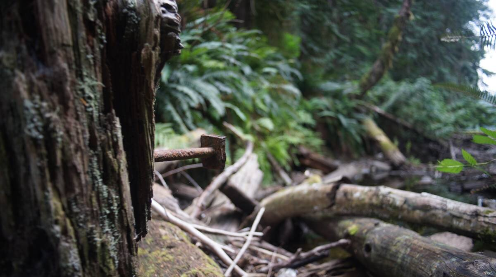

roscoe bay
Note. Land acknowledgements to come, when we have more bandwidth to properly research this area's rightful nations/bands
We arrived in Roscoe Bay on June 29th 2023, and left on July 9th.
Sailing to Roscoe Bay
On June 29th, we left Sturt Bay on Texada Island at 10h00, hoping that the wind would be as pleasant as it had been the previous day, sailing from Thunder Bay (Maude Bay). We glided out of Sturt Bay under full main and jib, but as soon as we got near Ahgykson Island, the wind ran out of steam, leaving Pino bobbing stupidly in the water.
Calcifer awoke and propelled us on, past Savary Island, past Lund, past the Copelands. We knew our friend Peter was anchored on Mink Island, but we had our heart set on Roscoe Bay on West Redonda Island.
We had wind again past Sarah Point, when turning into Desolation. It helped push us toward our anchorage.
Roscoe Bay
Roscoe Bay is on the lower east side of West Redonda Island, it's a fair-sized anchorage, allowing for plenty of free-swinging and stern-tying. The bay is guarded by a shallow bar at the entrance. The bar dries at 0.8m (2.62 ft). If using Navionics, the tide level of the bar is 3.5 ft below Twin Islands. For those using CHS Tides, the tide level of the bar is 3 ft less than Prideaux Haven. We entered the bay on a rising tide, and at the bar we had 8 ft under our keel. When we left, we had 4 ft under the keel (we exited on the high of a neap tide). Note that Pino drafts 6.25 ft. We had a bow look-out both times, but it was unnecessary.
We dropped anchor at the far western end of the bay, on the north shore near the Mt LLanover trail head. The sun sets behind the mountains earlier here, at 6h30. On hot days, we were thankful for that. In places like Melanie Cove, the sun is high and hot until 21h. There were 3 other boats when we came in. Devine had us anchor not too far from shore, so that we could stern-tie, should the anchorage get busier.
On July 1st, we were completely alone. Everyone had left. Then days later, more boats started coming in (including Peter), and we decided to stern-tie to shore (50°9.615'N, 124°46.260'W). This part of the bay is shallower, but even on a low low tide, with Pino's butt near the shore, we had 6.5 ft under the keel.
Winds from the SE tend to funnel down from Black Lake, otherwise the wind comes out of the eastern entrance. We had no trouble with holding, even in soft mud.
The camping grounds on the west side of the bay is often occupied with campers on kayaks, or small motor vessels. There is a working outhouse there too.
We found internet signal here, but it would come and go in the day, and we had to hoist the phone up just below the first spreader. When we hoist the phone up, we put it in a pouch, add a downhaul for the line and hoist it using a halyard. We tie off the end so it doesn't hit the mast.

Mt. Llanover
There are many trails near Roscoe Bay, the most well-trodden route is the short one leading to Black Lake, another is near the bay entrance (Ridge Trail, see below), and another leads to the summit of Mt. Llanover.
We left to do this trail at 10h00, along with Peter, Julia and Finnigan the dog. The trail is steep at times, but unlike the Trapper's Cabin Trail in Princess Louisa Inlet, this one also has a lot of flats.
The trail has several markers, the first being the logging road, then the wetlands, the large tire, and the rusty welding tank. Much of the walk crisscrosses a dried stream (dry at this time of the year, anyway). Near the top, both Julia and Devine got stung by bees. The bees thought it was smart to make a nest at ground level on the trail.
We made it to the top about two hours, a bit over 4km later.
From the top, it is easy to see where all of the logging happened, even walking on the trail, a lot of long-dead machinery lie in pieces, slowly digested by weather and the environment.
The top lies at 683m(2241ft), and offers amazing views of Desolation Sound, Cortes Island, Pendrell Sound, the far away mountain ranges of Vancouver Island (summit: 50°10.745'N, 124°47.462'W).
This walk was Finnigan's longest walk yet. That dog has a lot of energy. He kept running to the front, then the back, then the front again, making sure everyone was there. Finn likes to herd his humans.
Ridge Trail
Near the entrance to Roscoe Bay, on the south east shore, is a trail that follows the top of the mountain, along the park boundary, and that leads to yet, another view point (trail head: 50°9.620'N, 124°45.752'W. Landing the dinghy there is tricky, but someone removed a bunch of rocks and shells and created a smoother path. Because a SE wind was blowing and that we didn't want Teapot damaged, we hoisted it up ashore.
The walk involves a lot of climbing over rocks, and over wind swept trees. There are a lot of markers on the path. Further into the trail, some boaters installed ropes to help with climbing steep moss-covered walls. It took us about 1 hour each way (we think, we didn't time it).
Devine was stung again on this trail, by a wasp this time. Note: The bite area got very red, and itchy, and about 48 hours later the ankle and foot doubled in size, and stayed that way for 3 more days. It looked like Devine's foot was waterlogged, it was swollen and painful. Wasp bites are no joke. They don't leave their stingers when they bite, it happens quickly, and it hurts a lot. We'll be sure to always wear pants when walking on trails to avoid this. If a bite occurs, wash the area off with soap and water.
The summit (50°9.248'N, 124°46.353'W) offers a lovely view of the islands near Prideaux Haven, Mink Island, Sarah Point, and a view down part of Homfray Channel.
Black Lake
A freshwater lake just a short row/walk away is a hell of a treat. We went there to cool off, or to wash up on multiple occasions. A sign warns swimmers not to use soap (Phosphates, surfactants, triclosans, or any antibacterial ingredient, will kill marine life).
The main swimming area is off some rocks, past the start of the lake (also we've seen people swimming there too).
The trail leading to Black Lake also bears logging scars. The head of the trail runs parallel with a strip of water, which has remains of thick cables, and nail-encrusted pilings. Black Lake itself is full of sunken logs.
Solar cooking
Because we are stern-tied to shore, solar cooking is working very well, especially from 9h00-17h00. We leave it on the bow, and check it often as it is cooking.
Here are some solar roasted sunflower seeds. Checking on these often is especially important, because once the solar cooked is up to temperature these cook fast and can burn.
We also made some chocolate chip cake while here.